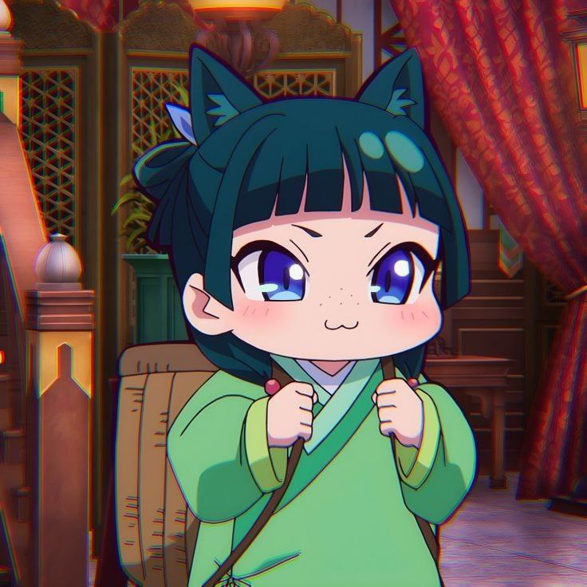
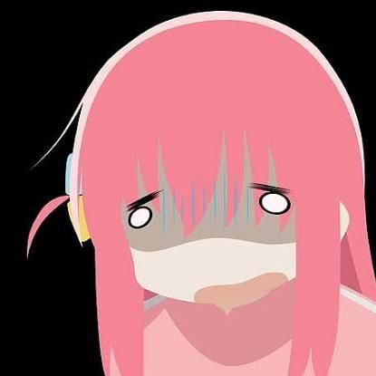
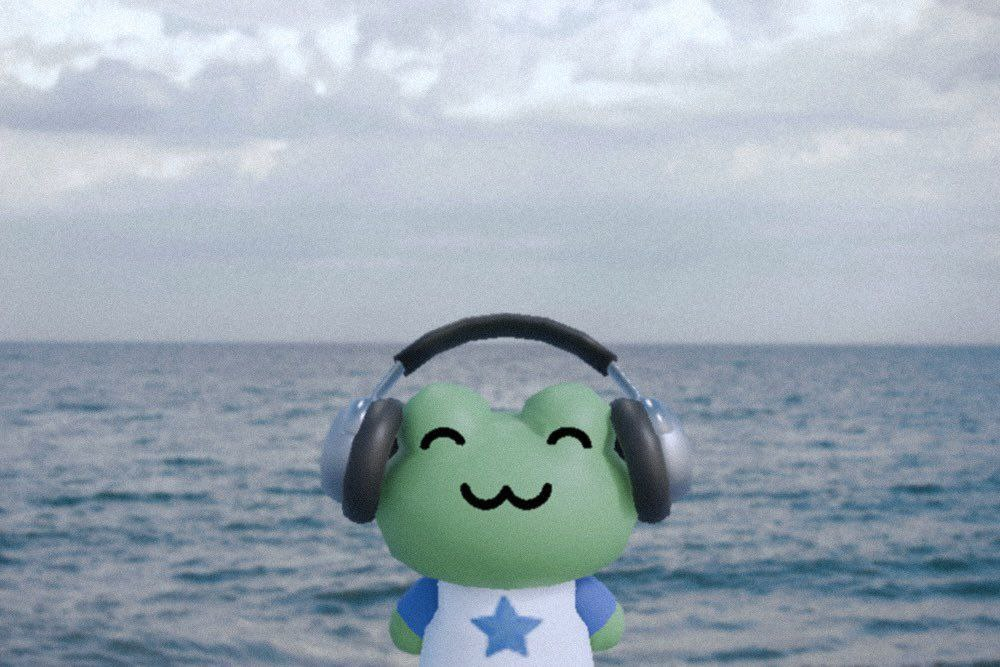
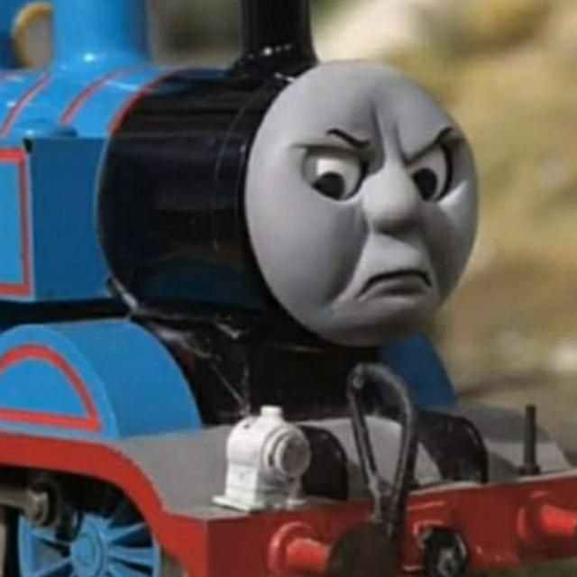
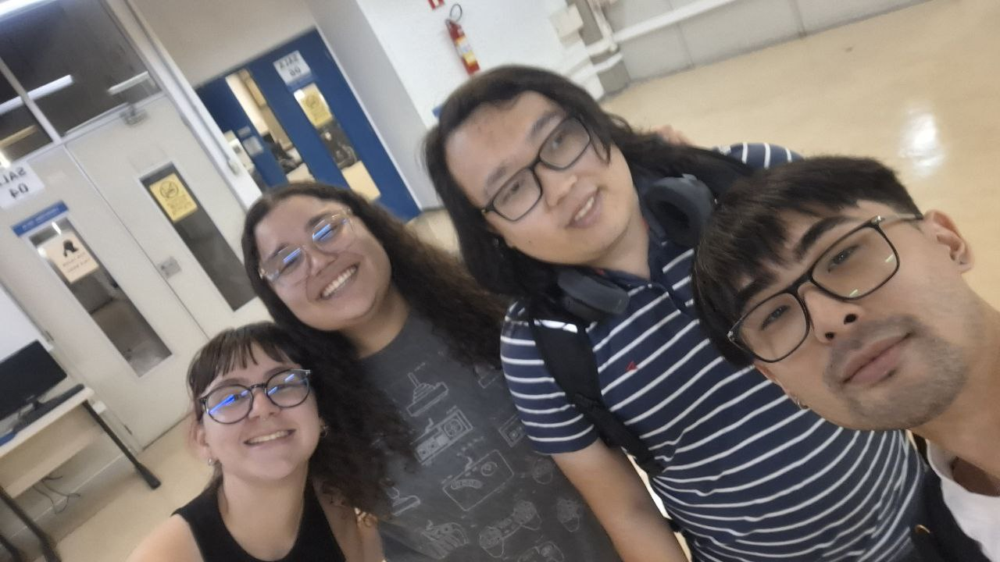

MAC0446/MAC5786 - Princípios de Interação Humano-computador
- Grupo: Morcego
- Integrantes:
-

Beatriz Gonzaga Correia - N°USP: 13717132 -

Bruno Hideki Akamine - N°USP: 11796322 -

Idian Camargo Capozzoli - N°USP: 11857299 -

Lucas Eiji Uchiyama - N°USP: 11807470
-
Fase 1 - empatia
Nesta fase, realizamos entrevistas com pessoas que integram nosso público-alvo de modo a compreendermos sua rotina e descobrirmos oportunidades de intervenção
Descrição do projeto
ODS escolhida: Objetivo 3 - Saúde e Bem-Estar
Objetivo específico: 3.4 - Promover saúde mental e bem-estar emocional
Público-Alvo: Pessoas que ao mesmo tempo trabalham e estudam, independente da área
Justificativa: O grupo foi escolhido por representar uma população frequentemente exposta
a altos níveis de estresse, tempo de lazer e descanso bastante restrito, pressão por desempenho e insegurança profissional. A escolha
busca compreender como essas pessoas lidam com a manutenção de seu bem-estar emocional, quais recursos utilizam e onde sentem
falta de suporte.
Relatório
Apresentação
Fase 2 - vídeo conceito
Nesta fase, definimos melhor nosso público-alvo e realizamos novas entrevistas. Com base nelas, criamos mapas de empatia, PdVs (pontos de vista) e CGPs (como a gente poderia) para decidirmos o problema que iremos resolver. A partir dos melhores CGPs, definimos soluções, que testamos por meio de storyboards e protótipos. Por fim, a melhor solução foi decidida e a demonstramos no nosso vídeo-conceito.
Relatório
Apresentação
Vídeo Conceito
Fase 3 - protótipo de baixo nível
Nesta fase, recriamos nosso vídeo-conceito de modo a mostrarmos melhor como ele pode ajudar o usuário. Desenvolvemos propostas diferentes de se utilizar o produto e decidimos nos concentrar em um aplicativo de celular. No final, criamos um protótipo de baixo nível em papel do projeto e o testamos com o pessoal de outros grupos de maneira a nos dar feedbacks de usabilidade.
Vídeo Conceito(nova versão)
Relatório
Vídeo de teste de usabilidade do protótipo (1)
Vídeo de teste de usabilidade do protótipo (2)
Vídeo de teste de usabilidade do protótipo (3)
Vídeo de teste de usabilidade do protótipo (4)
Fase 4 - protótipo de nível intermediário
Nesta fase, utilizamos os feedbacks fornecidos na etapa anterior para melhorar nosso protótipo de baixo nível e construir um protótipo de médio nível no Figma.
Protótipo no Figma
Relatório
Vídeo de demonstração
Fase 5 - avaliação
Nesta fase, o protótipo de nível intermediário foi avaliado por outro grupo com relação às heurísticas de Nielsen. A tabela de problemas foi então passado para nós para que possamos consertar novamente os problemas encontrados.
Fase 6 - avaliação
Nesta fase, o protótipo de nível intermediário foi consertado e realizamos entrevistas com usuários-alvo, apresentando a eles nosso protótipo.
